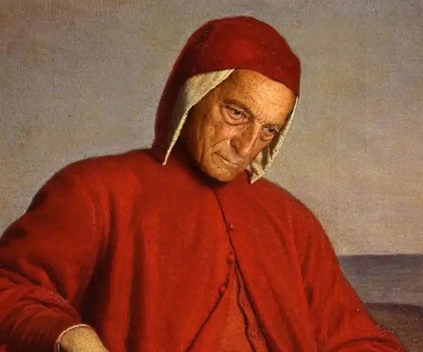

ДАНТЕ АЛІГЄРІ
(1265-1321)
Видатний італійський поет, велетенська постать якого, за висловом Ф.Енгельса, визначає кінець феодального середньовіччя і початок сучасної капіталістичної ери. В історію світової літератури він увійшов як "останній поет середньовіччя і перший поет нового часу" (Ф. Енгельс), автор "Нового життя" (1292-1293) і "Божественної комедії" (1313-1321). Народився Данте у Флоренції в дворянській сім'ї, яка належала до партії гвельфів, однієї з найбільш впливових флорентійських політичних партій. Вона виражала інтереси міської буржуазії й орієнтувалася на папу. Другою впливовою партією була партія гібелінів, яка захищала інтереси феодалів і орієнтувалася на імператора. Оскільки Флоренція на той час була найбільш розвинутим і найбагатшим містом роздробленої Італії, то саме тут відбувалась запекла боротьба між буржуазією, що поступово набирала силу, і прибічниками феодального суспільства. Данте з молодих років брав участь у політичній боротьбі на боці гвельфів, що вплинуло на формування його активної та діяльної натури. В той же час, навчаючись юриспруденції в Болонському університеті, Данте захоплюється поезією. Особливий вплив на нього здійснює школа "солодкого нового стилю", засновником якої був викладач літератури Болонського університету Гвідо Гвініцеллі. Саме його Данте називав своїм учителем і батьком. Лірика школи "солодкого нового стилю" поєднувала в собі досвід провансальської рицарської поезії з її витонченим культом служіння Дамі й традиції сіцілійської поезії, насиченої роздумами та філософським розгляданням краси. Ранні твори Данте (30 віршів, із яких 25 сонетів, 4 канцони і одна станца), об'єднані прозовим текстом, склали збірку під назвою "Нове життя" (Vita nuova). Твори цієї збірки несуть в собі всі елементи "солодкого нового стилю" — філософічність, риторичність, містичну символіку та витонченість форми. Але разом з тим, збірка стає і першим здобутком нової ренесанської літератури — справжнім гімном життю і любові. Вже сама назва її є символічною. Вона може трактуватись як "нове", "оновлене", "молоде" і може мати кілька смислових значень. По-перше, зміну одного періоду життя іншим (реальний план). По-друге, оновлення, пов'язане з культом дами серця і осмислене у відповідності з нормами любовного етикету, характерного для провансальської культури (план стилізації життєвих подій: "Нове життя" — автобіографічна повість про історію кохання Данте до Беатріче). І, по-третє, духовне переродження в релігійному розумінні (найвищий, філософський план). Цікаво відзначити, що вже в дебютному творі Данте оновлення має ступеневу систему — від земної дійсності (перша зустріч дев'ятирічного Данте з восьмирічною Беатріче в першій главі) через очищення до споглядання раю в останніх главах, де він, після смерті Беатріче, спираючись на символіку цифри дев'ять, доводить, що вона була "чудом, корінь якого знаходиться лише в дивній трійці". Ця смислова багатозначність, цей безупинний рух душі від земного до небесного, божественного позначать собою зміст і структуру вже в роки вигнання. Справа у тому, що Данте не тільки кохається в поезії, а й, будучи людиною цільного характеру й сильних пристрастей, людиною з розвиненою громадянською свідомістю, стає помітною політичною постаттю. До влади у Флоренції приходять гвельфи, і у 1300 році Данте обирається одним із семи членів колегії пріорів, яка правила міською комуною. Однак в умовах загострення суспільної боротьби єдність гвельфської партії тривала недовго, і вона розколюється на дві ворогуючі групи — "білих", які відстоювали незалежність комуни від папської курії, і "чорних" — прихильників папи. За допомогою папської влади "чорні" гвельфи розгромили "білих" і почали над ними розправу. Будинок Данте зруйнували, а самого його присудили до спалення. Рятуючи життя, Данте у 1302 році покидає Флоренцію, до якої так і не зможе більше повернутись. Перші роки вигнання він живе надією на поразку "чорних", намагається встановити зв'язки з гібелінами, але швидко зневірившись в них, проголошує, що віднині він сам "собою творить партію". Залишаючись прибічником єдиної Італії, Данте покладає надії на германського імператора Генріха VII, який невдовзі .вмирає. У вигнанні поет повною мірою пізнає, яким "гірким буває чужий хліб і як важко підніматись чужими сходами". Йому доводиться жити в меценатів — однодумців, розбирати їхні бібліотеки, служити секретарем, на деякий час (приблизно 1308-1310 роки) він перебирається до Парижа. Флоренція пропонує Данте повернутись до рідного міста за умови виконання принизливого образу покаяння, від чого Данте рішуче відмовляється. У 1315 році флорентійська сеньйорія знову засуджує його до смертної кари, і Данте назавжди втрачає надію на повернення до Флоренції, але не припиняє своєї суспільно-політичної діяльності за Італію без міжусобних війн і без папської влади. Не припиняє він і літературної діяльності. У його творчості періоду визнання з'являються нові риси, зокрема пристрасний дидактизм. Данте виступає як філософ і мислитель, керований бажанням вчити людей, відкривати їм світ істини, сприяти своїми творами моральному поліпшенню світу. Поезія його наповнюється моральними сентенціями, казковими знаннями, прийомами красномовства. У цілому ж превалюють публіцистичні мотиви і жанри. До 1313 року, коли він впритул приступає до створення "Божественної комедії", Данте пише морально-філософський трактат "Бенкет" (між 1304-1307 роками) і два трактати латиною "Про народну мову" і "Монархія". "Бенкет", як і "Нове життя", поєднує прозові тексти та вірші. Грандіозний за задумом (14 філософських канцон і 15 прозових трактатів-коментарів до них), він на жаль, залишився незакінченим: було написано 3 канцони і 4 трактати. Вже в першій канцоні Данте проголошує, що його мета — зробити знання доступними широкому колу людей і тому "Бенкет" написано не традиційною для народу того часу латинською мовою, а доступною для всіх людей італійською мовою-вольгаре. Він називає її "хлібом для всіх", хлібом, "яким наситяться тисячі... Він буде новим світлом, новим сонцем, яке зійде там, де зайде звичне; і воно дарує світло тим, хто перебуває в темряві, бо старе сонце їм більше не світить". У "Бенкеті" широко представлені філософські, богословські, політичні та моральні проблеми того часу. Середньовічний за сюжетом і манерою викладання — так, філософія тут виступає в образі шляхетної донни,— твір Данте несе в собі виразні риси ренесанської доби. Перш за все це звеличення людської особистості. На глибоке переконання поета, благородство людини залежить не від багатства або аристократичного походження, а є виразом мудрості й духовної довершеності. Вищою ж формою довершеності душі є пізнання, "в ньому полягає найвище наше блаженство, всі ми від природи прагнемо до нього". Викликом середньовіччю звучить його заклик: "Розлюбіть світло знання!", звернений до владарів, тих, хто стоїть над народами. Цей заклик провіщає уславлення жаги пізнання як однієї з найблагородніших властивостей людини в "Божественній комедії". У 26-й пісні "Аду" Данте виводить на сцену легендарного Одіссея (Улісса) і подає його як невтомного і мужнього шукача нових світів і нових знань. У словах героя, звернених до своїх украй стомлених і виснажених супутників, криється переконання самого поета: О браття,— мовив я,— прийшли вже ви Крізь сотні тисяч лих на захід дальній! Недовгий строк потратьте життєвий, Що вам лишився, на відповідальні Ще дальші подорожі в світ сумний, Щоб вслід за сонцем землі зріть печальні, То ж пригадайте, ви чиї сини, Бо ви народжені не животіти, А знання й честь нести у світ ясний. Ренесанським духом сповнені його роздуми над долею роздробленої Італії і полемічні випади проти її ворогів і недостойних правителів; "О бідна моя батьківщина, яка жалість до тебе стискує моє серце, кожного разу, коли я читаю, кожного разу, коли я пишу, що-небудь про державне управління!" або (звертання до нині забутих королів Карла Неаполітанського та Фрідріха Сіцілійського): "Замислитесь над цим, ворогі Божії, ви, котрі — спочатку один, потім другий — захопили правління над усією Італією, я звертаюсь до вас, Карл і Фрідріх, і до вас, інші володарі й тирани... Краще б вам, як ластівкам, низько літати над землею, як яструбам, кружляти в недосяжній вишині, позираючи звідтіля на найбільші підлості". Трактат "Про народну мову" являє собою першу в Європі мовознавчу працю, головна ідея якої — необхідність створення єдиної для Італії літературної мови та її панування над численними діалектами (їх Данте нараховує чотирнадцять). Громадянська позиція Данте позначається навіть у цій суто філологічній праці: він вносить політичний зміст у свої наукові судження, пов'язуючи їх із важливою для нього ідеєю єдності країни. Пафосом єдності Італії просякнутий і незавершений трактат "Монархія", який вінчає його політичну публіцистику. Це свого роду політичний маніфест Данте, в якому він висловлює свої погляди на можливість побудови справедливої і гуманної держави, здатної забезпечити загальний мир і особисту свободу кожного громадянина. Якби Данте не написав більш нічого, його ім'я все одно б увійшло навічно в історію світової літератури. І все ж його світова слава пов'язана в першу чергу з останнім твором — поемою "Божественна комедія" (1313-1321). У ній Данте зібрав воєдино увесь досвід розуму й серця, художньо переосмислив основні мотиви й ідеї своїх попередніх творів, щоб сказати своє слово "на користь світу, де добро гонимо". Мета поеми, як зазначав сам поет, "вирвати тих, хто живе в цьому житті зі стану мізерії і привести їх до стану блаженства". Данте назвав свій твір "Комедією", пояснюючи, що так позначається, згідно з нормами середньовічної поетики, будь-який твір середнього стилю зі страхітливим початком і щасливим кінцем, написаний народною мовою. "Божественною комедією" дантівську поему назвав Джованні Боккаччо, автор "Декамєрону" і перший біограф Данте, в своїй книзі "Життя Данте", виражаючи своє захоплення художньою досконалістю форми й багатством змісту твору. Поема складається з трьох частин: "Пекло", "Чистилище" і "Рай".